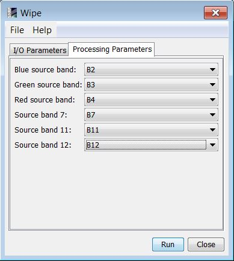

| WIPE Operator | |
The purpose of the WIPE algorithm is to perform coastal and inland water pixels extraction algorithm (WiPE) from spectral shape analysis and HSV transformation.
| Parameter | Description |
|---|---|
| Blue source band | Band around 490nm. (Band 2 in Sentinel-2) |
| Green source band | Band around 560nm. (Band 3 in Sentinel-2) |
| Red source band | Band around 665nm. (Band 4 in Sentinel-2) |
| Source band 7 | Band around 783nm. |
| Source band 11 | Band around 1610nm. |
| Source band 12 | Band around 2190nm. |
The parameters described above can be set through the graphical user interface designed in the SNAP Desktop component:
The WIPE processor detects the water bodies using as inputs the bands 2, 3, 4, 7, 11 and 12 of a rayleigh corrected Sentinel -2 product.
Back to S2-4Sci Land and Water Study Modules List